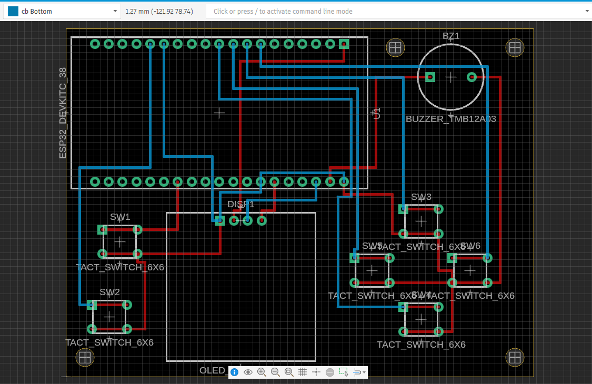
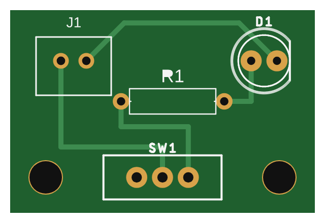
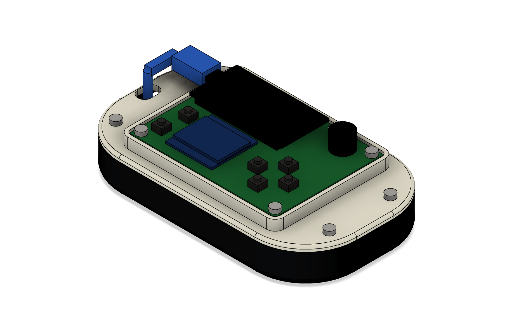
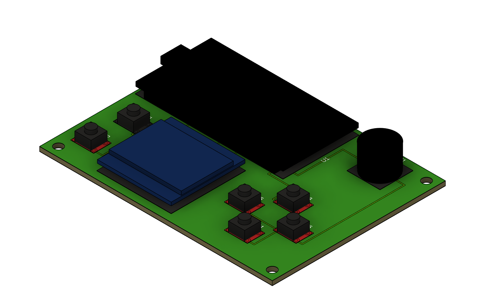

מתכננים מוצר שלם ב-Fusion 360, עם AI לצידכםDesign a whole product in Fusion 360, with an AI by your side
חלקים בתלת-מימד להדפסה, מעגלים מודפסים שמפעל יכול לייצר, ומוצר שלם שמחבר ביניהם: הלוח, הקופסה סביבו, וכל קבצי הייצור. הצ'אט מתכנן איתכם, בודק במספרים ובתמונה, ואומר בדיוק מה נבדק ומה לא. ארבעה שלבים מובילים לשם.3D parts to print, circuit boards a factory can make, and the whole product that joins them: the board, the case around it, and every production file. The chat designs with you, checks by numbers and by picture, and says exactly what was verified and what was not. Four stages get you there.
חלקים בתלת-מימד3D parts
ממילים, מסקיצה או מחפץ אמיתי: מפרט במ"מ, סקריפט, בדיקה, STL להדפסה.From words, a sketch or a real object: a spec in mm, a script, checks, STL to print.
מסלול 2Track 2תכנון מעגליםCircuit design
סכמה, לוח, ניתוב, בדיקות מול המפעל, וקבצי Gerber להזמנה.Schematic, board, routing, checks against the factory, and Gerber files to order.
מסלול 3Track 3מוצר שלםA whole product
הלוח בתלת-מימד, קופסה סביבו, ותיק ייצור מלא: STL, לוח, הרכבה ורשימת חלקים.The board in 3D, a case around it, and a full production package: STL, board, assembly, bill of materials.
תוכנהSoftware
הקוד שרץ על הלוח, כחלק מהמוצר. עוד לא כאן, ואנחנו אומרים את זה.The code that runs on the board, as part of the product. Not here yet, and we say so.
מתקיניםSet up
Fusion, חשבון Autodesk, VS Code והצ'אט. פעם אחת לכל מחשב.Fusion, an Autodesk account, VS Code and the chat. Once per computer.
2לומדים בידLearn by hand
קורס הווידאו של Babook: מטבע, פינצטה, מפתח, פייה, ספל.The Babook video course: a coin, tweezers, a key, a nozzle, a mug.
3הקסם עם AIThe AI magic
כותבים "תגיד לי מה לעשות" והצ'אט מתכנן, בודק ומייצא.Type "Tell me what to do" and the chat designs, checks and exports.
4דוגמאותExamples
אותם חפצים מהקורס, בנויים מהצ'אט, עם סקריפט, תמונות וקובץ.The course's objects built from the chat, with script, pictures and archive.
שלב 1: מתקיניםStage 1: set up
את זה עושה בן אדם, פעם אחת. כל קליק מפורט ב-docs/get_started.md.A human does this, once. Every click is in docs/get_started.md.
- Autodesk FusionAutodesk Fusionמורידים מאתר Autodesk ונכנסים עם חשבון (לשימוש אישי יש רישיון חינמי, בודקים את התנאים באתר). Fusion רץ על Windows ו-macOS בלבד.Download from Autodesk's site and sign in with an account (a personal-use licence is free at the time of writing; check the terms on the site). Fusion runs on Windows and macOS only.
- VS Code, Git וצ'אט AIVS Code, Git and an AI chatVS Code, Git, ובתוך VS Code: Claude Code או GitHub Copilot במצב Agent.VS Code, Git, and inside VS Code: Claude Code or GitHub Copilot in Agent mode.
- משכפלים את המאגרClone this repoב-VS Code: Ctrl+Shift+P, "Git: Clone", מדביקים
https://github.com/avisalmon/Fusion360BKM.git, בוחרים תיקייה, Open.In VS Code: Ctrl+Shift+P, "Git: Clone", pastehttps://github.com/avisalmon/Fusion360BKM.git, pick a folder, Open. - הגשרThe bridgeבצ'אט כותבים "תגיד לי מה לעשות": הצ'אט מקשר את התוסף CopilotBridge לתוך Fusion, מבקש הפעלה מחדש אחת של Fusion, ובודק שהכול עונה (
fusion.py doctor).In the chat, type "Tell me what to do": the chat links the CopilotBridge add-in into Fusion, asks for one restart of Fusion, and checks that everything answers (fusion.py doctor).
שלב 2: לומדים לתכנן ביד, כמו פעםStage 2: learn to design by hand, old school
לפני הקסם כדאי להבין מה קורה בפנים: מה זה סקיצה, אקסטרוד, ריבולב, פרמטר. הקורס של אבי סלמון ב-Babook (בעברית, 7 שיעורי וידאו) בונה חפצים אמיתיים ומכין אותם להדפסה.Before the magic, it pays to know what happens inside: what a sketch, an extrude, a revolve and a parameter are. Avi Salmon's course on Babook (Hebrew, 7 video lessons) builds real objects and prepares them for printing.
לקורס ב-BabookThe course on Babookהשלב הזה לא חובה: מי שרוצה יכול לקפוץ ישר לקסם, והצ'אט יסביר כל מושג ברגע שהוא נחוץ. אבל מי שעשה את הקורס מבין מה ה-AI עושה, ויודע לבדוק אותו.This stage is optional: skip straight to the magic if you like, and the chat explains each concept when it matters. But someone who did the course understands what the AI does, and can check it.
שלב 3: הקסם, מתכננים עם AI לצידכםStage 3: the magic, design with an AI by your side
פותחים את התיקייה ב-VS Code, כותבים בצ'אט "תגיד לי מה לעשות" (או "Tell me what to do"), והצ'אט:Open the folder in VS Code, type "Tell me what to do" in the chat, and it:
- בודק ומחברChecks and connectsהאם Fusion מותקן, מקושר, פתוח ועונה; מתקין מה שחסר; מושך את הגרסה החדשה של המדריך בתחילת כל שיחה.Whether Fusion is installed, linked, running and answering; installs what is missing; pulls the newest version of this guide at the start of every session.
- בונה את התבנית ומראהBuilds the template and shows itקופסה פרמטרית עם מכסה; משנה פרמטר אחד ואתם רואים את כל החלק עוקב אחריו.A parametric box with a lid; changes one parameter and you watch the whole part follow.
- מתכנן את החלק שלכםDesigns your partבמילים, מסקיצה בכתב יד שצילמתם, או מחפץ אמיתי שמדדתם: קודם רשימת מידות במ"מ שמסכימים עליה, ואז סקריפט שנבנה ב-Fusion ונבדק במספרים ובצילום מסך.From words, from a hand-drawn sketch you photographed, or from a real object you measured: first a list of dimensions in mm you agree on, then a script built in Fusion and checked by numbers and by a screenshot.
- מייצא ומלמדExports and teachesSTL להדפסה, STEP ו-F3D; מסביר כל מושג ברגע שהוא נחוץ, סוקר את העיצוב לפני ההדפסה, ועוזר להעלות ל-GitHub משלכם.STL for printing, STEP and F3D; explains each concept when it matters, reviews the design before printing, and helps you put it on your own GitHub.
Tell me what to do
design a stand for my phone, 72 x 150 x 8 mm, leaning back
design a board: an ESP32, a 0.96" screen, six buttons and a buzzer
now a rounded case for it, with a power bank inside| אתםYou | הצ'אטThe chat |
|---|---|
| מתקינים את Fusion ונכנסים לחשבון; סוגרים חלון דו-שיח כשמבקשים; מסתכלים על המסך ועל ההדפסה; מודדיםInstall Fusion and sign in; close a dialog when asked; look at the screen and the print; measure | כל השאר: הסקריפטים, ההרצה ב-Fusion, הבדיקה במספרים ובתמונה, הייצוא, GitEverything else: the scripts, running them in Fusion, checking numbers and pictures, exports, git |
איך זה עובד מבפנים (זה לא שרת MCP; תוסף קטן בתוך Fusion ושורת פקודה אחת): docs/architecture.md. כל הדרך: docs/journey_checklist.md.How it works inside (not an MCP server; a small add-in inside Fusion and one command line): docs/architecture.md. The whole road: docs/journey_checklist.md.
תכנון מעגלים: ממילים ללוח שמפעל יכול לייצרCircuit design: from words to a board a factory can make
ה-Electronics workspace של Fusion, מהצ'אט. הצ'אט כותב את הפקודות, קורא כל דבר בחזרה, ובודק את הלוח שלוש פעמים: הבדיקות של Fusion, הבדיקות שלנו מול המגבלות של המפעל (JLCPCB), ומפעל מדומה שקורא את קבצי ה-Gerber כמו שהמפעל קורא אותם.Fusion's Electronics workspace, from the chat. The chat writes the commands, reads everything back, and checks the board three times: Fusion's own checks, ours against the factory's limits (JLCPCB), and a simulated factory that reads the Gerber files the way the fab does.
- המעגל במילים, והחלקיםThe circuit in words, and the partsמסכימים מה הוא עושה ואילו פינים מתחברים; כל חלק מספריית Fusion או מהספרייה שלכם, עם פינים שנבדקו על הרכיב עצמו.Agree what it does and which pins connect; every part from Fusion's libraries or from your own library, its pins checked on the real part.
- סכמה שקל לקרואA schematic people can readנבנית מהצ'אט, ורשימת החיבורים נקראת בחזרה ומושווית לכוונה.Built from the chat; its netlist is read back and compared with the intent.
- מיקום החלקים: אתם מחליטיםPlacement: you decideהצ'אט מציע ועוצר: אתם מזיזים חלקים ב-Fusion, והוא קורא את המיקום שלכם בחזרה.The chat proposes, then stops: you move parts in Fusion, and it reads your placement back.
- ניתוב ובדיקותRouting and checksמסלולים בשתי שכבות; אפס שגיאות בבדיקות של Fusion, בבדיקות שלנו ובמפעל המדומה, כולל בדיקה חשמלית של הלוח הריק.Tracks on two layers; zero errors in Fusion's checks, ours and the simulated factory, including the bare-board electrical test.
- דף סיכום וקבצים למפעלA summary page and the factory filesדף אחד לכל לוח: פסק דין, הסכמה והלוח עם רשתות שנדלקות, רשימת חלקים, וה-zip שמעלים למפעל.One page per board: a verdict, the schematic and board with nets that light up, the parts, and the zip you upload to the fab.



לוחות שנבנו כך: לד ומתג, מהבהב 555, Tiny Arcade. הזמנה אמיתית מהמפעל עוד לא נעשתה, ואנחנו אומרים את זה.Boards built this way: an LED switch, a 555 blinker, Tiny Arcade. A real order from the fab has not been placed yet, and we say so.
מוצר שלם: הלוח, הקופסה, וכל קבצי הייצורA whole product: the board, the case, and every production file
כאן שני העולמות נפגשים. כל רכיב בספרייה נושא מודל תלת-מימד, אז הלוח עולה לתלת-מימד והקופסה מתוכננת סביבו. ההתאמה מוכחת: כל חלק מודפס נחתך מול כל רכיב, בורג, סוללה וכבל, וחייב לצאת 0 מ"מ³.Here the two worlds meet. Every part in the library carries a 3D model, so the board goes to 3D and the case is designed around it. The fit is proven: every printed part is intersected with every component, screw, battery and cable, and must come out at 0 mm³.

Tiny Arcade
ערכת ה-Single Button כלוח משחק קטן: ESP32, מסך, שישה כפתורים וזמזם, בקופסה מעוגלת עם סוללת גיבוי בפנים. כל הדרך מהצ'אט, עם שתי עצירות לבדיקה שלכם: מיקום החלקים, וקונספט ההדפסה.The Single Button kit as a small game board: an ESP32, a screen, six buttons and a buzzer, in a rounded case with a power bank inside. The whole way from the chat, with two stops for your review: the placement, and the printing concept.
- קבצי ה-Gerber של הלוח, בדוקיםThe board's Gerber files, checked
- STL של הגוף ושל המכסה, בלי תמיכותThe body and deck STL, no supports
- ההרכבה: STEP עם הברגים והכבל, וקובץ ה-FusionThe assembly: a STEP with the screws and the cable, and the Fusion file
- רשימת חלקים לכל המוצר, ותבנית נייר בגודל אמיתיA bill of materials for everything, and a true-size paper template




ובהמשך: התוכנה שרצה על הלוח תהיה חלק מהמוצר, באותה דרך: נכתבת מהצ'אט, נבדקת, ונכנסת לתיק.Later: the software that runs on the board becomes part of the product the same way: written from the chat, checked, and added to the package.
שלב 4: דוגמאות שנבנו מהצ'אטStage 4: examples built from the chat
חלקים, לוחות ומוצר שלם: לכל דוגמה הסקריפטים, צילומי מסך מ-Fusion, הקבצים לפתיחה, ודף שאומר בדיוק מה נבדק ומתי, ומה הדוגמה לימדה את המדריך הזה.Parts, boards and a whole product: for each, the scripts, screenshots from Fusion, the files to open, and a page that says exactly what was verified and when, and what the example taught this guide.
לקטלוג הדוגמאותThe examples catalogue התבנית: קופסה פרמטריתThe template: a parametric boxנבנו עד עכשיו: קופסה מפתק נייר (שרטוט ביד, מצולם, נבנה ונבדק); שלושה לוחות, לד ומתג, מהבהב 555 ו-Tiny Arcade עם הקופסה ותיק הייצור. בתור: המטבע, הפינצטה, המפתח, הפייה והספל מהקורס. אף לוח עוד לא הוזמן ואף קופסה עוד לא הודפסה, ואנחנו אומרים את זה.Built so far: a box from a paper note (hand-drawn, photographed, built and verified); three boards, an LED switch, a 555 blinker and Tiny Arcade with its case and production package. In the queue: the course's coin, tweezers, key, nozzle and mug. No board has been ordered and no case printed yet, and we say so.
ספריית הרכיביםThe part library
כל רכיב שעל לוח הוא תא ספרייה שלם: תמונות, פינים שנבדקו על הרכיב, פוטפרינט וסימבול שנבדקו ב-Fusion, ומודל תלת-מימד. הספרייה של אבי פתוחה, כדוגמה איך ספרייה צריכה להיראות; לכל משתמש ספרייה משלו.Every part on a board is a full library cell: photos, pins checked on the part, a footprint and a symbol checked in Fusion, and a 3D model. Avi's library is public, as an example of what a library should look like; every user keeps their own.